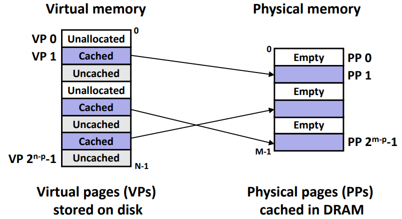
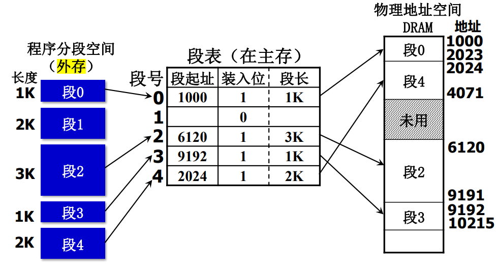
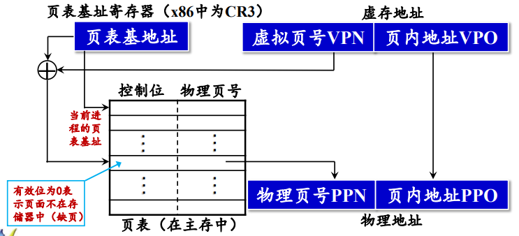
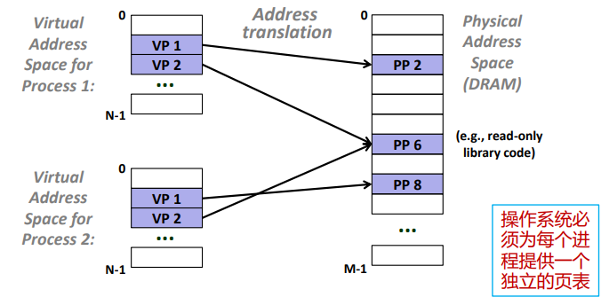
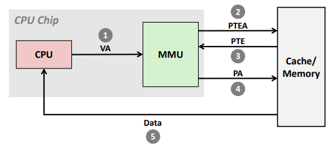
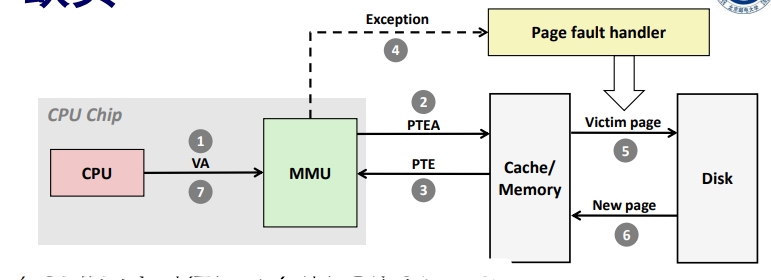
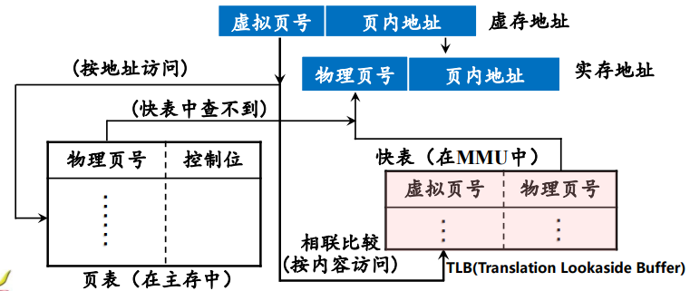
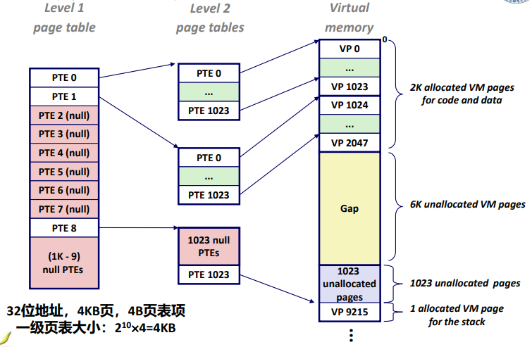
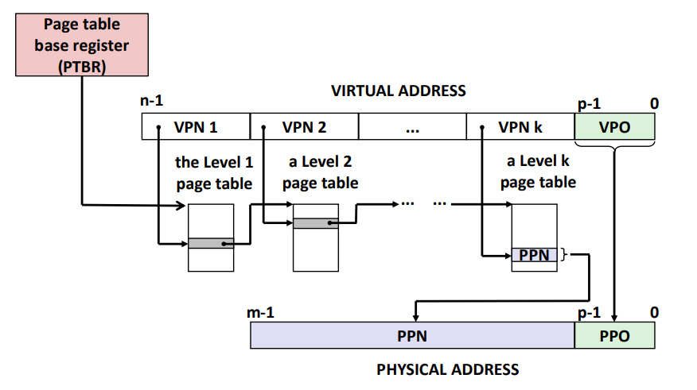

总感觉以前看 CSAPP 的时候学过，一看博客还真是。
基本概念
背景：
上古的电脑各个进程共享 CPU 和主存资源。然而随着进程数量增多，程序所需的存储器容量可能大于实际的主存容量。因此，我们希望添加一层对主存的抽象，从而更好地管理内存。
“抽象”：
- 为每一个程序（进程）采用 独立编址；无需考虑程序是否在主存中放得下，无需考虑程序放置的物理位置。
- 在程序运行时分配给每个程序一定的运行空间；
- 由 地址转换部件（MMU）将编写程序时使用的 逻辑地址 转换成实际内存的 物理地址，称作程序再定位；
主存 - 外存层次:
- 虚拟存储器 (VM) 只是一个容量非常大的存储器的逻辑模型，可以视作一个 存储在磁盘上的 N 个字节的大数组；
- 过去的 CPU 可以直接进行 物理寻址，直接指向存储器中的存储单元；而现在主要采用的是 虚拟寻址，实际地址可能对应于主存的不连续位置，需要一个 MMU 做地址转换；

-
VM 采用的是 “主存 - 外存层次”，用户编写程序时使用的地址称为虚拟地址，位于磁盘；而借助 CPU 访问物理地址是程序的实际地址，位于主存；
-
主存 - 外存层次具有以下常用的几种存储管理方式：
-
直接物理寻址，存在于早期PC和嵌入式系统中；
-
段式存储管理：段是一种程序的模块化划分，是按照程序的逻辑结构所划分成的多个相对独立部分；段式管理可以根据 段表基址寄存器和段号 查找，从而实现信息共享和内存保护，但易造成主存中出现不好用的碎块，影响主存储器的利用效率。

-
页式存储管理：把虚拟空间和主存空间都分成大小相同的页（page），并以页为单位进行虚存与主存间的信息交换。尽管处理、保护和共享都不如段式管理方便，但是存储单元大小一致有利于数据传输。
虚拟地址被分为：虚拟页号（VPN）和页内地址（VPO）；而物理地址被分为：物理页号（PPN）和页内地址；页号不同，页内地址一致。我们也会通过查找页表中对应的页表条目（PTE），确定对应的物理地址。

-
页式虚拟存储器
1. 页表
如上图所示，页表是由若干 PTE 组成的数组，可以通过查表的方式判断虚拟页是否被缓存在 DRAM 的某个地方。最简单的 PTE 是由一个有效位以及 n 位地址组成的：
有效位表明了该虚拟页是否被缓存，如果设置了有效位，则后面的地址字段则代表了 DRAM 相应页的物理地址；若未设置，则一个 NULL 值代表虚拟页未分配，否则指向虚拟页在磁盘的起始地址。
其次，PTE 和其他数据字一样，可以被缓存在 cache 中。毕竟从内存中查找页表需要几百个时钟周期，而在 L1 cache 中查找 PTE 只需要 1、2 个时钟周期。
再其次，从操作系统的角度来说，我们会为每一个程序（进程）都分配一个相同的虚拟地址空间，从而极大简化了内存分配的机制。

2. 页命中
- 当 CPU 想读取虚拟内存中的某一个字，他就会把对应的虚拟地址传给 MMU。MMU 则会生成对应的 PTE 地址，去cache/主存中请求查找；
- 如果对应 PTE 的有效位是 1，则页命中，MMU 利用对应的 PPN 构造物理地址，并将其传送给cache/主存查找对应的数据字；

3. 页缺失
首先我们得知道，页命中只需要硬件参与，而处理页缺失的功能则是由软硬件联合提供的（包括页表、OS、MMU 等）。
- 当 CPU 想读取虚拟内存中的某一个字，他就会把对应的虚拟地址传给 MMU。MMU 则会生成对应的 PTE 地址，去cache/主存中请求查找；
- 如果对应 PTE 的有效位是 0，则页缺失，MMU 触发缺页异常，CPU 调用对应的异常处理程序；
- 该程序会选择一个将会被替换掉的牺牲页，由于这里采用的是 cache 那一套读写逻辑，因此会先判断这个页面有没有被修改过（即查看对应页的修改位）。如果发现这个页面被修改过，则将其写回至磁盘；
- 缺页程序将新的数据页调入至cache/主存，并更新 PTE，重新执行导致缺页的命令。由于 VP 现在已缓存在物理内存中， 所以肯定命中;

4. 快表 TLB
从cache/主存中查找页表需要花费 1~1000 不等的时钟周期，如果我们能在 MMU 中内置一个极小的缓存，即可省下这些开销，这个 cache 被称作翻译后备缓冲器（TLB）。
对待 TLB，我们完全可以直接把 cache 那一套搬过来，本质上也就是不命中、替换算法之类的东西。如果地址命中，则 MMU 可以直接将对应 PTE 上的虚拟地址翻译成物理地址，发送出去。

5. 二级页表
-
考虑如下系统：4KB 页大小，48 位虚拟地址空间，每个页表项 8 字节，问页表大小？ !!
-
但虚拟内存的页表必须放在主存中，如何解决？我们发现虽然总体占用内存很大，但通常情况下只会有很少的一部分内存被调用！
-
采取二级层次结构页表：
- 一级页表（驻留主存）：每个表项指向一个二级页表；
- 二级页表（可被调入调出）：每个表项指向一个虚拟页；如果对应二级页表中的每一页都未分配，则无需创建二级页表，对应一级页表的表项置为 NULL；

类似的，K 级页表的翻译会将虚拟地址位划分成 k 个 VPN 以及一个 VPO。如下图所示，每一位 都是对应着 级页表的偏移索引，而其中每一个 PTE 对应的是 级页表的基址。

虚拟内存 vs. 高速缓存
1. 存储区分
-
虚存：
- 采用 “主存-辅存层次”，主要目的是解决存储容量问题；
- 数据交换次数较少，但每次交换的数据量大；
-
Cache：
- 主要目的是解决存储速度问题，使存储器的访问速度不拖后腿；
- 数据交换的次数较多，每次交换的数据量较小；
2. cache - 主存 vs. 主存 - 辅存
- 相同点：都为了提高存储系统的性能，原理都是程序运行时的局部性原理；
- 不同点：
- cache主要解决主存与CPU的速度差异问题，而虚存主要解决存储容量的问题（每个程序的虚地址空间可以远大于实地址空间）；
- CPU与cache和主存之间均有直接访问通路，cache不命中时可直接访问主存；而辅存与CPU之间不存在直接的数据通路，主存不命中时只能通过调页解决；
- cache的管理完全由硬件负责，对系统程序和应用程序均透明；而虚存管理是由软件（操作系统）和硬件共同负责。虚存只对应用程序透明；